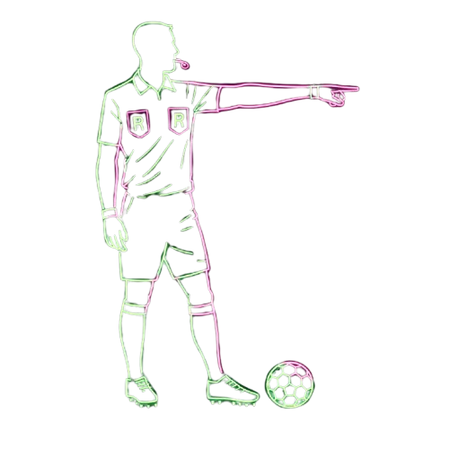

Track Premier League referee performance, compare community ratings, and compete in the fantasy ref league.
Scroll to explore

Track Premier League referee performance, compare community ratings, and compete in the fantasy ref league.